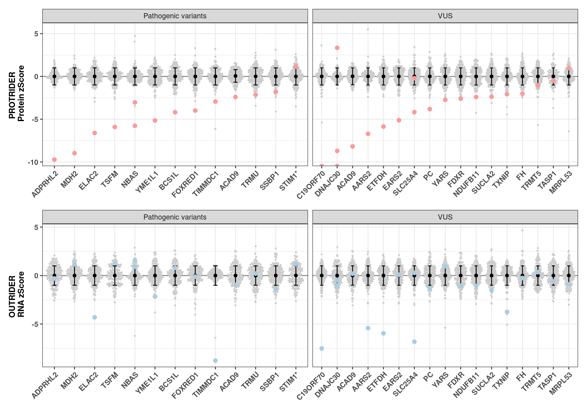

# load functions
source(snakemake@input$config)
dev.off()
## null device
## 1
##########################################################
# Read integrated omics file
# rp <- readRDS("/s/project/mitoMultiOmics/multiOMICs_integration/processed_data/integration/patient_omics.RDS") %>% as.data.table()
rp <- readRDS(snakemake@input$patient_omics) %>% as.data.table()
# Load sample annotation
# sa <- fread('/s/project/mitoMultiOmics/multiOMICs_integration/filemappings/proteomics_annotation.tsv')
sa <- fread(snakemake@input$sample_annotation)
sa <- sa[USE_FOR_PROTEOMICS_PAPER == T]
sa$sample_gene <- paste0(sa$SAMPLE_ID, "_", sa$KNOWN_MUTATION)
sa <- sa[order(CATEGORY, KNOWN_MUTATION)]
# Remove UQCRFS1 as soon as it was not detected by proteomics
# and RNA-seq is not avaliable for the case with known pathogenic vaiant
sa <- sa[KNOWN_MUTATION != "UQCRFS1"]
# Subset cases with pathogenic variants (I) and VUS (II)
sa <- sa[CATEGORY %in% c( "I", "IIa", "IIb", "IIc") ]
sa[CATEGORY %in% c("IIa", "IIb", "IIc"), CATEGORY := "II"]
sa$CATEGORY <- factor(sa$CATEGORY, c( "I", "II"))
# Subset data for causal genes in all samples
rp <- rp[ geneID %in% sa$KNOWN_MUTATION]
# ACAD9 appears in both categories, duplicate the entry
sa[KNOWN_MUTATION == "ACAD9" & SAMPLE_ID == "OM65708", KNOWN_MUTATION := " ACAD9"]
sa$sample_gene <- paste0(sa$SAMPLE_ID, "_", sa$KNOWN_MUTATION)
rp_acad9 <- rp[geneID == "ACAD9" & SAMPLE_ID != "OM65728"]
rp_acad9$geneID <- paste0(" ", rp_acad9$geneID)
rp <- rp[ !(geneID == "ACAD9" & SAMPLE_ID == "OM65708") ]
rp <- rbind(rp, rp_acad9 )
rp$sample_gene <- paste0(rp$SAMPLE_ID, "_", rp$geneID)
rm(rp_acad9)
# Annotate with category
gene_cat <- sa[ , c("KNOWN_MUTATION", "CATEGORY")]
gene_cat <- gene_cat[!duplicated(gene_cat)]
rp <- merge(rp, gene_cat, by.x = "geneID", by.y = "KNOWN_MUTATION")
rm(gene_cat)
# Rename categories
rp[CATEGORY == "I", CATEGORY := "Pathogenic variants"]
rp[CATEGORY == "II", CATEGORY := "VUS"]
# Annotate with causal gene
rp$causal_gene <- NULL
rp[, causal_gene := sample_gene %in% sa$sample_gene]
rp[, cat3 := sample_gene %in% sa[CATEGORY == "III"]$sample_gene ]
rp[geneID == "STIM1", geneID := "STIM1*"]
rp[causal_gene == T & is.na(PROTEIN_ZSCORE), PROTEIN_ZSCORE := -Inf]
rp[causal_gene == T & is.na(RNA_ZSCORE), RNA_ZSCORE := -Inf]
rp_c <- rp[causal_gene == T & CATEGORY %in% c("Pathogenic variants" , "VUS")]
rp$geneID <- factor(rp$geneID, unique(rp_c[ order(PROTEIN_ZSCORE)]$geneID))
#####################################################################
protrider <- ggplot(rp, aes(geneID, PROTEIN_ZSCORE ))+
geom_hline(yintercept = 0, color = "grey50") +
geom_quasirandom(data = rp[causal_gene != T ] , aes(geneID, PROTEIN_ZSCORE),color = "grey80" , size=0.5)+
stat_summary(fun.data = mean_sdl, fun.args = list(mult=1), geom="errorbar", color="black", width=0.2) +
stat_summary(fun = mean, geom="point", color="black") +
ylab("PROTRIDER \n Protein zScore") +
geom_point( data = rp[causal_gene == T ], aes(geneID, PROTEIN_ZSCORE), colour = "#FB9A99" , size = 2)+
geom_point( data = rp[cat3 == T ], aes(geneID, PROTEIN_ZSCORE ), size = 1, colour = "darkgreen", shape = 8)+
theme_bw()+
theme( legend.title = element_blank(),
axis.title.x = element_blank(),
plot.title = element_text(face="bold", size=14, hjust = 0.5),
axis.title.y = element_text(face="bold", size=10, hjust = 0.5),
axis.text.x = element_text(face="bold", size=9, angle = 45, hjust = 1),
axis.text.y = element_text(face="bold", size=9),
legend.position = "none")+
facet_grid(~CATEGORY, scales = "free_x")
outrider <- ggplot(rp, aes(geneID, RNA_ZSCORE ))+
geom_hline(yintercept = 0, color = "grey50") +
geom_quasirandom(data = rp[causal_gene != T ] , aes(geneID, RNA_ZSCORE),color = "grey80" , size=0.5)+
stat_summary(fun.data = mean_sdl, fun.args = list(mult=1), geom="errorbar", color="black", width=0.2) +
stat_summary(fun = mean, geom="point", color="black") +
ylab("OUTRIDER \n RNA zScore") +
geom_point( data = rp[causal_gene == T ], aes(geneID, RNA_ZSCORE), color = "#A6CEE3" , size = 2)+
geom_point( data = rp[cat3 == T ], aes(geneID, RNA_ZSCORE ), size = 1, colour = "darkgreen", shape = 8)+
theme_bw()+
theme( legend.title = element_blank(),
axis.title.x = element_blank(),
plot.title = element_text(face="bold", size=14, hjust = 0.5),
axis.title.y = element_text(face="bold", size=10, hjust = 0.5),
axis.text.x = element_text(face="bold", size=9, angle = 45, hjust = 1),
axis.text.y = element_text(face="bold", size=9),
legend.position = "none")+
facet_grid(~CATEGORY, scales = "free_x")
Fig_S2c <- protrider / outrider
Fig_S2c

pdf("/s/project/mitoMultiOmics/multiOMICs_integration/Figures/Supplementary_figures/S_Fig2_c.pdf",
width = 10, height =7, useDingbats=FALSE )
print(Fig_S2c)
dev.off()
## png
## 2
IyctLS0KIycgdGl0bGU6IFN1cHBsZW1lbnRhcnkgRmlnIDJjCiMnIGF1dGhvcjogc21pcm5vdmQKIycgd2I6CiMnICBpbnB1dDogCiMnICAtIGNvbmZpZzogJ3NyYy9jb25maWcuUicKIycgIC0gcGF0aWVudF9vbWljczogJ2BzbSBjb25maWdbIlBST0NfREFUQSJdICsgIi9pbnRlZ3JhdGlvbi9wYXRpZW50X29taWNzLlJEUyJgJwojJyAgLSBzYW1wbGVfYW5ub3RhdGlvbjogJ2BzbSBjb25maWdbIkFOTk9UQVRJT04iXWAnCiMnICBvdXRwdXQ6CiMnIG91dHB1dDogCiMnICAgaHRtbF9kb2N1bWVudDoKIycgICAgY29kZV9mb2xkaW5nOiBoaWRlCiMnICAgIGNvZGVfZG93bmxvYWQ6IFRSVUUKIyctLS0KCgojIGxvYWQgZnVuY3Rpb25zCnNvdXJjZShzbmFrZW1ha2VAaW5wdXQkY29uZmlnKQoKZGV2Lm9mZigpCgoKIyMjIyMjIyMjIyMjIyMjIyMjIyMjIyMjIyMjIyMjIyMjIyMjIyMjIyMjIyMjIyMjIyMjIyMjIyMjIwojIFJlYWQgaW50ZWdyYXRlZCBvbWljcyBmaWxlIAojIHJwIDwtIHJlYWRSRFMoIi9zL3Byb2plY3QvbWl0b011bHRpT21pY3MvbXVsdGlPTUlDc19pbnRlZ3JhdGlvbi9wcm9jZXNzZWRfZGF0YS9pbnRlZ3JhdGlvbi9wYXRpZW50X29taWNzLlJEUyIpICU+JSBhcy5kYXRhLnRhYmxlKCkKcnAgPC0gcmVhZFJEUyhzbmFrZW1ha2VAaW5wdXQkcGF0aWVudF9vbWljcykgJT4lIGFzLmRhdGEudGFibGUoKQoKCgojIExvYWQgc2FtcGxlIGFubm90YXRpb24KIyBzYSA8LSBmcmVhZCgnL3MvcHJvamVjdC9taXRvTXVsdGlPbWljcy9tdWx0aU9NSUNzX2ludGVncmF0aW9uL2ZpbGVtYXBwaW5ncy9wcm90ZW9taWNzX2Fubm90YXRpb24udHN2JykKc2EgPC0gZnJlYWQoc25ha2VtYWtlQGlucHV0JHNhbXBsZV9hbm5vdGF0aW9uKQpzYSA8LSBzYVtVU0VfRk9SX1BST1RFT01JQ1NfUEFQRVIgPT0gVF0Kc2Ekc2FtcGxlX2dlbmUgPC0gcGFzdGUwKHNhJFNBTVBMRV9JRCwgIl8iLCBzYSRLTk9XTl9NVVRBVElPTikKc2EgPC0gc2Fbb3JkZXIoQ0FURUdPUlksIEtOT1dOX01VVEFUSU9OKV0gCgoKIyBSZW1vdmUgVVFDUkZTMSBhcyBzb29uIGFzIGl0IHdhcyBub3QgZGV0ZWN0ZWQgYnkgcHJvdGVvbWljcyAKIyBhbmQgUk5BLXNlcSBpcyBub3QgYXZhbGlhYmxlIGZvciB0aGUgY2FzZSB3aXRoIGtub3duIHBhdGhvZ2VuaWMgdmFpYW50IApzYSA8LSBzYVtLTk9XTl9NVVRBVElPTiAhPSAiVVFDUkZTMSJdCgoKIyBTdWJzZXQgY2FzZXMgd2l0aCBwYXRob2dlbmljIHZhcmlhbnRzIChJKSBhbmQgVlVTIChJSSkKc2EgPC0gc2FbQ0FURUdPUlkgJWluJSBjKCAiSSIsICJJSWEiLCAiSUliIiwgIklJYyIpIF0Kc2FbQ0FURUdPUlkgJWluJSBjKCJJSWEiLCAiSUliIiwgIklJYyIpLCBDQVRFR09SWSA6PSAiSUkiXQpzYSRDQVRFR09SWSA8LSBmYWN0b3Ioc2EkQ0FURUdPUlksIGMoICJJIiwgIklJIikpCgoKIyBTdWJzZXQgZGF0YSBmb3IgY2F1c2FsIGdlbmVzIGluIGFsbCBzYW1wbGVzCnJwIDwtIHJwWyBnZW5lSUQgJWluJSBzYSRLTk9XTl9NVVRBVElPTl0KCgoKIyBBQ0FEOSBhcHBlYXJzIGluIGJvdGggY2F0ZWdvcmllcywgZHVwbGljYXRlIHRoZSBlbnRyeQpzYVtLTk9XTl9NVVRBVElPTiA9PSAiQUNBRDkiICYgU0FNUExFX0lEID09ICJPTTY1NzA4IiwgS05PV05fTVVUQVRJT04gOj0gIiBBQ0FEOSJdCnNhJHNhbXBsZV9nZW5lIDwtIHBhc3RlMChzYSRTQU1QTEVfSUQsICJfIiwgc2EkS05PV05fTVVUQVRJT04pCgpycF9hY2FkOSA8LSBycFtnZW5lSUQgPT0gIkFDQUQ5IiAmIFNBTVBMRV9JRCAhPSAiT002NTcyOCJdCnJwX2FjYWQ5JGdlbmVJRCA8LSBwYXN0ZTAoIiAiLCBycF9hY2FkOSRnZW5lSUQpCnJwIDwtIHJwWyAhKGdlbmVJRCA9PSAiQUNBRDkiICYgU0FNUExFX0lEID09ICJPTTY1NzA4IikgXQpycCA8LSByYmluZChycCwgcnBfYWNhZDkgKQpycCRzYW1wbGVfZ2VuZSA8LSBwYXN0ZTAocnAkU0FNUExFX0lELCAiXyIsIHJwJGdlbmVJRCkKcm0ocnBfYWNhZDkpCgoKIyBBbm5vdGF0ZSB3aXRoIGNhdGVnb3J5CmdlbmVfY2F0IDwtIHNhWyAsIGMoIktOT1dOX01VVEFUSU9OIiwgIkNBVEVHT1JZIildCmdlbmVfY2F0IDwtIGdlbmVfY2F0WyFkdXBsaWNhdGVkKGdlbmVfY2F0KV0KcnAgPC0gbWVyZ2UocnAsIGdlbmVfY2F0LCBieS54ID0gImdlbmVJRCIsIGJ5LnkgPSAiS05PV05fTVVUQVRJT04iKQpybShnZW5lX2NhdCkKCgojIFJlbmFtZSBjYXRlZ29yaWVzIApycFtDQVRFR09SWSA9PSAiSSIsIENBVEVHT1JZIDo9ICJQYXRob2dlbmljIHZhcmlhbnRzIl0KcnBbQ0FURUdPUlkgPT0gIklJIiwgQ0FURUdPUlkgOj0gIlZVUyJdCgoKIyBBbm5vdGF0ZSB3aXRoIGNhdXNhbCBnZW5lCnJwJGNhdXNhbF9nZW5lIDwtIE5VTEwKcnBbLCBjYXVzYWxfZ2VuZSA6PSAgc2FtcGxlX2dlbmUgJWluJSBzYSRzYW1wbGVfZ2VuZV0KcnBbLCBjYXQzIDo9IHNhbXBsZV9nZW5lICVpbiUgc2FbQ0FURUdPUlkgPT0gIklJSSJdJHNhbXBsZV9nZW5lIF0KCnJwW2dlbmVJRCA9PSAiU1RJTTEiLCBnZW5lSUQgOj0gIlNUSU0xKiJdCnJwW2NhdXNhbF9nZW5lID09IFQgJiBpcy5uYShQUk9URUlOX1pTQ09SRSksIFBST1RFSU5fWlNDT1JFIDo9IC1JbmZdCnJwW2NhdXNhbF9nZW5lID09IFQgJiBpcy5uYShSTkFfWlNDT1JFKSwgUk5BX1pTQ09SRSA6PSAtSW5mXQoKcnBfYyA8LSBycFtjYXVzYWxfZ2VuZSA9PSBUICYgQ0FURUdPUlkgJWluJSBjKCJQYXRob2dlbmljIHZhcmlhbnRzIiAsICAiVlVTIildCnJwJGdlbmVJRCA8LSBmYWN0b3IocnAkZ2VuZUlELCB1bmlxdWUocnBfY1sgb3JkZXIoUFJPVEVJTl9aU0NPUkUpXSRnZW5lSUQpKQoKCiMjIyMjIyMjIyMjIyMjIyMjIyMjIyMjIyMjIyMjIyMjIyMjIyMjIyMjIyMjIyMjIyMjIyMjIyMjIyMjIyMjIyMjIyMjIwoKCiMrIGZpZy53aWR0aD0xMCwgZmlnLmhlaWdodD00CnByb3RyaWRlciA8LSBnZ3Bsb3QocnAsIGFlcyhnZW5lSUQsICBQUk9URUlOX1pTQ09SRSApKSsKICBnZW9tX2hsaW5lKHlpbnRlcmNlcHQgPSAwLCBjb2xvciA9ICJncmV5NTAiKSArCiAgZ2VvbV9xdWFzaXJhbmRvbShkYXRhID0gcnBbY2F1c2FsX2dlbmUgIT0gVCBdICwgYWVzKGdlbmVJRCwgIFBST1RFSU5fWlNDT1JFKSxjb2xvciA9ICJncmV5ODAiICwgc2l6ZT0wLjUpKwogIHN0YXRfc3VtbWFyeShmdW4uZGF0YSA9IG1lYW5fc2RsLCBmdW4uYXJncyA9IGxpc3QobXVsdD0xKSwgZ2VvbT0iZXJyb3JiYXIiLCBjb2xvcj0iYmxhY2siLCB3aWR0aD0wLjIpICsKICBzdGF0X3N1bW1hcnkoZnVuID0gbWVhbiwgZ2VvbT0icG9pbnQiLCBjb2xvcj0iYmxhY2siKSArCiAgeWxhYigiUFJPVFJJREVSIFxuIFByb3RlaW4gelNjb3JlIikgKyAKICBnZW9tX3BvaW50KCBkYXRhID0gcnBbY2F1c2FsX2dlbmUgPT0gVCBdLCBhZXMoZ2VuZUlELCAgUFJPVEVJTl9aU0NPUkUpLCBjb2xvdXIgPSAiI0ZCOUE5OSIgLCBzaXplID0gMikrCiAgZ2VvbV9wb2ludCggZGF0YSA9IHJwW2NhdDMgPT0gVCBdLCBhZXMoZ2VuZUlELCAgUFJPVEVJTl9aU0NPUkUgKSwgc2l6ZSA9IDEsIGNvbG91ciA9ICJkYXJrZ3JlZW4iLCBzaGFwZSA9IDgpKwogIHRoZW1lX2J3KCkrCiAgdGhlbWUoIGxlZ2VuZC50aXRsZSA9IGVsZW1lbnRfYmxhbmsoKSwKICAgICAgICAgYXhpcy50aXRsZS54ID0gZWxlbWVudF9ibGFuaygpLAogICAgICAgICBwbG90LnRpdGxlID0gZWxlbWVudF90ZXh0KGZhY2U9ImJvbGQiLCAgc2l6ZT0xNCwgaGp1c3QgPSAwLjUpLAogICAgICAgICBheGlzLnRpdGxlLnkgPSBlbGVtZW50X3RleHQoZmFjZT0iYm9sZCIsICBzaXplPTEwLCBoanVzdCA9IDAuNSksCiAgICAgICAgIGF4aXMudGV4dC54ID0gZWxlbWVudF90ZXh0KGZhY2U9ImJvbGQiLCAgc2l6ZT05LCBhbmdsZSA9IDQ1LCBoanVzdCA9IDEpLAogICAgICAgICBheGlzLnRleHQueSA9IGVsZW1lbnRfdGV4dChmYWNlPSJib2xkIiwgIHNpemU9OSksCiAgICAgICAgIGxlZ2VuZC5wb3NpdGlvbiA9ICJub25lIikrCiAgZmFjZXRfZ3JpZCh+Q0FURUdPUlksIHNjYWxlcyA9ICJmcmVlX3giKQoKCiMrIGZpZy53aWR0aD0xMCwgZmlnLmhlaWdodD00Cm91dHJpZGVyIDwtIGdncGxvdChycCwgYWVzKGdlbmVJRCwgIFJOQV9aU0NPUkUgKSkrCiAgZ2VvbV9obGluZSh5aW50ZXJjZXB0ID0gMCwgY29sb3IgPSAiZ3JleTUwIikgKwogIGdlb21fcXVhc2lyYW5kb20oZGF0YSA9IHJwW2NhdXNhbF9nZW5lICE9IFQgXSAsIGFlcyhnZW5lSUQsICBSTkFfWlNDT1JFKSxjb2xvciA9ICJncmV5ODAiICwgc2l6ZT0wLjUpKwogIHN0YXRfc3VtbWFyeShmdW4uZGF0YSA9IG1lYW5fc2RsLCBmdW4uYXJncyA9IGxpc3QobXVsdD0xKSwgZ2VvbT0iZXJyb3JiYXIiLCBjb2xvcj0iYmxhY2siLCB3aWR0aD0wLjIpICsKICBzdGF0X3N1bW1hcnkoZnVuID0gbWVhbiwgZ2VvbT0icG9pbnQiLCBjb2xvcj0iYmxhY2siKSArCiAgeWxhYigiT1VUUklERVIgXG4gUk5BIHpTY29yZSIpICsgCiAgZ2VvbV9wb2ludCggZGF0YSA9IHJwW2NhdXNhbF9nZW5lID09IFQgXSwgYWVzKGdlbmVJRCwgIFJOQV9aU0NPUkUpLCBjb2xvciA9ICIjQTZDRUUzIiAsIHNpemUgPSAyKSsKICBnZW9tX3BvaW50KCBkYXRhID0gcnBbY2F0MyA9PSBUIF0sIGFlcyhnZW5lSUQsICBSTkFfWlNDT1JFICksIHNpemUgPSAxLCBjb2xvdXIgPSAiZGFya2dyZWVuIiwgc2hhcGUgPSA4KSsKICB0aGVtZV9idygpKwogIHRoZW1lKCBsZWdlbmQudGl0bGUgPSBlbGVtZW50X2JsYW5rKCksCiAgICAgICAgIGF4aXMudGl0bGUueCA9IGVsZW1lbnRfYmxhbmsoKSwKICAgICAgICAgcGxvdC50aXRsZSA9IGVsZW1lbnRfdGV4dChmYWNlPSJib2xkIiwgIHNpemU9MTQsIGhqdXN0ID0gMC41KSwKICAgICAgICAgYXhpcy50aXRsZS55ID0gZWxlbWVudF90ZXh0KGZhY2U9ImJvbGQiLCAgc2l6ZT0xMCwgaGp1c3QgPSAwLjUpLAogICAgICAgICBheGlzLnRleHQueCA9IGVsZW1lbnRfdGV4dChmYWNlPSJib2xkIiwgIHNpemU9OSwgYW5nbGUgPSA0NSwgaGp1c3QgPSAxKSwKICAgICAgICAgYXhpcy50ZXh0LnkgPSBlbGVtZW50X3RleHQoZmFjZT0iYm9sZCIsICBzaXplPTkpLAogICAgICAgICBsZWdlbmQucG9zaXRpb24gPSAibm9uZSIpKwogIGZhY2V0X2dyaWQofkNBVEVHT1JZLCBzY2FsZXMgPSAiZnJlZV94IikKCgoKIysgZmlnLndpZHRoPTEwLCBmaWcuaGVpZ2h0PTcKRmlnX1MyYyA8LSBwcm90cmlkZXIgLyBvdXRyaWRlcgpGaWdfUzJjCgoKCgpwZGYoIi9zL3Byb2plY3QvbWl0b011bHRpT21pY3MvbXVsdGlPTUlDc19pbnRlZ3JhdGlvbi9GaWd1cmVzL1N1cHBsZW1lbnRhcnlfZmlndXJlcy9TX0ZpZzJfYy5wZGYiLCAgCiAgICB3aWR0aCA9IDEwLCBoZWlnaHQgPTcsICB1c2VEaW5nYmF0cz1GQUxTRSApCnByaW50KEZpZ19TMmMpIApkZXYub2ZmKCkKCgo=